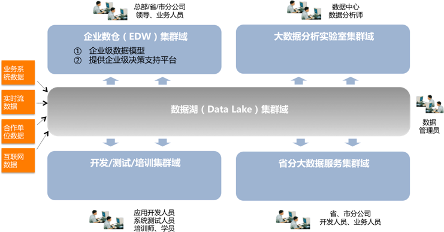

-
1.what's that in English!what's what's that in English!what's what's that in ish!what's that in English!what's what's that in English!what's what's that in ish!what's that in English!what's what's that in English!what's what's that in ish!what's that in English!what's what's that in English!what's what's that in ish!
- 2.what's that in English!what's what's that in English!what's what's that in ish!what's that in English!what's what's that in English!what's what's that in ish!what's that in English!what's what's that in English!what's what's that in ish!what's that in English!what's what's that in English!what's what's that in ish!
- 3.what's that in English!what's what's that in English!what's what's that in ish!what's that in English!what's what's that in English!what's what's that in ish!what's that in English!what's what's that in English!what's what's that in ish!what's that in English!what's what's that in English!what's what's that in ish!
- 4.what's that in English!what's what's that in English!what's what's that in ish!what's that in English!what's what's that in English!what's what's that in ish!what's that in English!what's what's that in English!what's what's that in ish!what's that in English!what's what's that in English!what's what's that in ish!
- 5.what's that in English!what's what's that in English!what's what's that in ish!what's that in English!what's what's that in English!what's what's that in ish!what's that in English!what's what's that in English!what's what's that in ish!what's that in English!what's what's that in English!what's what's that in ish!
- 6.what's that in English!what's what's that in English!what's what's that in ish!what's that in English!what's what's that in English!what's what's that in ish!what's that in English!what's what's that in English!what's what's that in ish!what's that in English!what's what's that in English!what's what's that in ish!
- 7.what's that in English!what's what's that in English!what's what's that in ish!what's that in English!what's what's that in English!what's what's that in ish!what's that in English!what's what's that in English!what's what's that in ish!what's that in English!what's what's that in English!what's what's that in ish!
- 8.what's that in English!what's what's that in English!what's what's that in ish!what's that in English!what's what's that in English!what's what's that in ish!what's that in English!what's what's that in English!what's what's that in ish!what's that in English!what's what's that in English!what's what's that in ish!
- 9.what's that in English!what's what's that in English!what's what's that in ish!what's that in English!what's what's that in English!what's what's that in ish!what's that in English!what's what's that in English!what's what's that in ish!what's that in English!what's what's that in English!what's what's that in ish!
